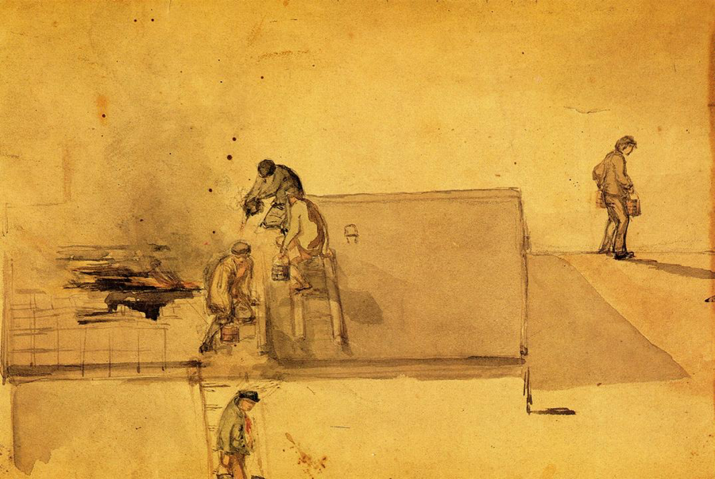
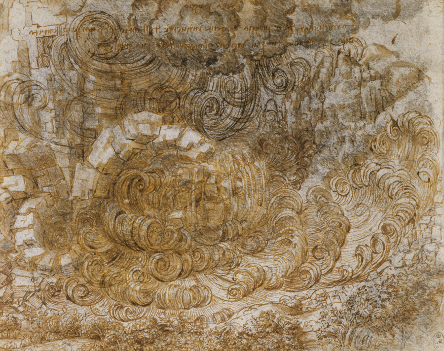

Charles D. Tarlton
Northampton, Massachusetts, USA
Two Ekphrastic Pieces James McNeill Whistler:A Fire at Pomfret[1]  You cannot put a Fire out—
A Thing that can ignite
Can go, itself . . . —Emily Dickinson |
I The truth about house fires is that those who live through one are reluctant to return; the house is ruined for them. On Harland Road in Norwich, Connecticut, there was a big Victorian mansion that burned. The fire had been in the upper floors and before they got it put out it had burned a horrible gash up through the second floor and out to the roof. The house was abandoned, and you could see into it from the road, as if into an incision. The fire exposed the upper floors to the wind and rain. fire is like a wolf
harmless when contained. I saw
wolves once in the zoo
they all paced incessantly
searching for holes in the fence we say, when a fire
starts, that it has “broken out”
a rapacious beast
it will devour everything—
at that point it must be killed patient buckets filled
with water, hauled up and thrown
while sparks and cinders
soar up in the wind above
the fire’s open hungry mouth II And suddenly there came a sound from heaven as of a rushing mighty wind, and it filled all the house where they were sitting. And there appeared unto them cloven tongues like as of fire, and it sat upon each of them. —2Acts, 2-3
I built a fire in the old fireplace to help create the mood. We were renovating an old house and I wanted to surprise Ann with an elaborate supper and drinks by the fire. The walls were stripped back to the studs, but I had vacuumed and washed the raggedy floors, moved the fancy table out of storage, and sat down with a drink to wait for her. I heard a loud swooshing noise and I went outside to see. The yard was lit as brightly as if there’d been a battery of Klieg lights in the yard. The sound I’d heard was coming from the chimney, out of the top of which a tower of red and orange fire stood, roaring like a blowtorch. the voice of prophets
is not always clearly heard
and choking on smoke
the world burning around us
—who has the time of listen? was an act of faith
to think they could extinguish
people wanting things
drive them off their land into
pens, smother each small flare-up fire’s a metaphor
for love, for anger, and zeal
—burning for someone . . .
—getting hot under the collar . . .
—or blazing with ambition III Whistler’s watercolor of a house on fire reminds me of Duchamp’sNude Descending a Staircase. Duchamp had broken the idea of a fluid movement into stages, glimpses, the way theMutoscope (a coin-in-the-slot-peep-show-machine) let you watch a flapper undress. Here, the action of the bucket-brigade is broken down functionally into its stages: a man on a ladder reaches back to take a bucket of water from someone below who is not in the picture, a man on the roof waits to take the bucket from him, further up on the roof another man holds a full bucket to pass to yet a fourth man who is tossing water into the burning hole in the roof. A last man carries empty buckets away. nota priori
movement assumes a witness
logic doesn’t know
just how far a man can reach
when to give him the bucket they are arranged here
in a staged tragedy
the chorus huddling
while the banished Oedipus
tip-toes furtively away this is a painting
hesitating on the cusp
of figuration
and the abstract. So much cut
from the details of the scene Après nous le déluge[2]  I do set my bow in the cloud, and it shall be for a token of a covenant between me and the earth.
—Genesis 9:13
It started to rain; it rained all day and night, every day, and the gutters filled, and the sluices and drains were overflowing. At first, of course, the strong rain was seen as something normal, but as it went on, the worrying started. From every quarter came the warning—floods! Priests, weathermen, the President all urged calm, but the mouths of the rivers choked as oceans rose, houses fell into the sea, the sky darkened permanently, and mountains washed away. in a rigid form
the wildest poems I’d written
kept spilling over
because the torrent piling up
called for more and still more rain In the dry soil of the south of France, the summer rains create sudden and violent flooding, but for just a moment. The runoff is fierce and washes everything out of its way. And, then, all of a sudden, the hot sun returns and the runnel changes back to sand. a place, a person
making metaphors of rain
keeping rain in sight
fumbling for the names of rocks
creating crystal cataracts We decided to move from San Francisco back to the East Coast. We went house hunting all along the New England coast, starting up in Maine and New Hampshire. We wanted with all our hearts to live near the sea. On Plum Island, close by Newburyport in Massachusetts, found our dream house—a hundred yards from the beach, just behind the dunes. We were negotiating the purchase and emailing all our friends. We got a message back from my goddaughter, who is an environmentalist and studies the rising oceans. She had an app that let her punch in an address anywhere in the U.S. and learn its elevation above sea level. Our dream house was barely above water. Her email back to me simply said— “You cannot buy that house!” each wave licks away
the sand, devouring the berm
eventually
swallowing by grace of tides
foreshore up to the seawall PCB’s and mercury were jettisoned into the Hudson River and poisoned all the fish and drinking water they could reach. “Floods dump mud into the river, sewage and the runoff from city streets, so why not chemicals,” the managers had coyly asked, and then answered—“Go ahead, dump it!” images of rising
waters, the river’s angry
the seas now incensed
the rains becoming ceaseless
God reneging on his pledge
Author's Notes: [1]Dimensions: Height: 13.02 cm (5.13 in.), Width: 19.69 cm (7.75 in.) Medium: Painting—watercolor on brown paper. All of Whistler’s works are in the public domain. This image was downloaded fromThe Atheneum. [2]Da Vinci’sDelugeis in the public domain and this image was downloaded from Wiki Commons. |